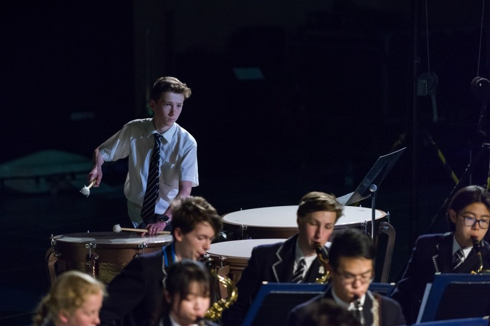

An important part of my life is music, particularly percussion. I continue to drum in a jazz band and a New Orlean's fanfare band. I am also a percussionist in an orchestra. I definitely enjoy myself when performing or taking part in these activities.
In our jazz band, "Froggers", the "rhythm section" as we like to be known, consists of five instruments. These are the drums, piano, rhythm guitar, double bass and vibest. We perform in school concerts as well as national competitions, such as "Generations in Jazz", hosted in Mount Gambier each year. We practice and perform artists such as Charles Mingus, Duke Ellington, Art Tatum and Count Basie.
The Brass Fanefare Band involves secondline drumming and New Orlean's Style Jazz, a combo that sounds great. In this band, I just play the snare drum. The band in total consists of 2 trombonist, 2 trumpeters, 1 tenor saxophonist, 1 sousaphone/tuba, bass drum and cymbal player and snare drummer. An inspiration for us is the "Rebirth Brass Band".
Leading percussion in an orchestra is another great experiance I am lucky to have. With an orchesta the dynamics (both musically and as a whole group) are vastly different to a band. Firstly for a percussionist, there are many differnt instruments to specialise in. The timpani and xylophone for instance require different skills. I am mostly required as a timpanist, although I also help out with all the auxillary percussion (such as triangles and vibraslap) and the mallet percussion (mainly cymbals). It is a challenge at times, but well worth it. I enjoy the diversity of music that I hear every week from joining these groups and it means you are always learning new things as well.
I am very fortunate to have music. It is crazy how music can express what cannot be put into words. I'll finish with some wise words from Miles Davis and Yip Harburg...
"When you hit a wrong note, it's the next note that makes it good or bad." - Miles Davis
"Words make you think a thought. Music makes you feel a feeling. A song makes you feel a thought." - Yip Harburg

Musescore
I have spent many hours on Musescore. In effort to create music, I have used this software for both notation and also for production. This is a program that is closest to the standard technique that historically, composers would uses to create music. That is, every note, melody and rhythm has to be transcribed and make sense with the other instruments. Another great feature of this program, is that it is free!
My first song, named appropriately as "Song 1", was made entirely on Musescore. It is a classical song in the key of C at 110 beats per minute. The song is played prodominently by the string and percussion section. The main instruments are the cellos, violins, timpani (even featuring a timpani solo), bass drum and snare drum. I'll admit the song is a little too serious for my liking.
Song 1
The song "Lord of the Jazz" was a variation on the original Anglican song "Lord of the Dance". It was a group project and the result came out pretty good. We are now looking to extend this project and explore the genres such as ska, reggae, funk and metal.
Lord of the Jazz (a collaboration with Miles Thomas, James Hornibrook and myself).
Jive Dive is another jazz piece I have been working on. It uses the jungle drum feel with a strong, leading bass line. I was inspired by Charles Mingus, trying to replicate the crazy, chaos that he is well known for, particually for brass and woodwind.
Jive Dive
Fruity Loops
Fruity Loops is one of the best digital audio workstations (DAW) and production software around. It is made by Image-Line. It is fun to play with, however I am still new and am learning a lot.
There is a wide range of sounds available, almost an infinite number, due to all the customisation and effects you can add. You can even change the shape of a soundwave!
Here is part of one of my tracks that I am yet to finish.
Music Reviews/Critic
Reviewing music is enjoyable, particularly if it is music you like. I try to give an in-depth analysis, not only on the melody and rhythm of the song/piece, but also the production techniques and the inspirations for the song/piece.